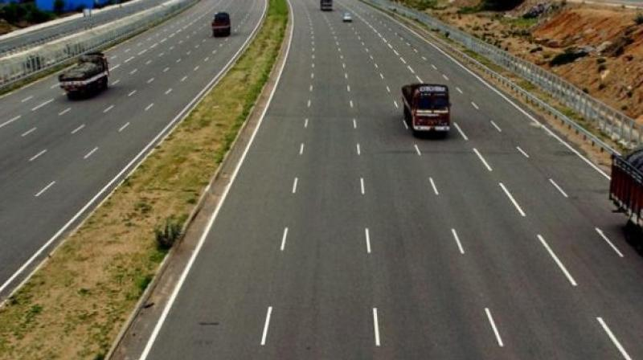

The effect of the
# wires in the
data bus
Recall on
how the
data bus is
used:
The effect of the
# wires in the
data bus
Important fact about electrical wires:
The
width of
the databus:
The effect of the
# wires in the
data bus
Effect of
the width (= number of wires) of the
databus:
- A databus that consists of
8 bits (= 8 wires), can transfer
1 byte of data
per read/write operation
- A databus that consists of
16 bits (= 16 wires), can transfer
2 bytes of data
per read/write operation
- A databus that consists of
32 bits (= 32 wires),
can transfer
4 bytes of data
per read/write operation
- And os on...
|
Analogy:
the
number of wires in a
data bus is
similar to the
number of lanes
in a high way
The effect of the
# wires in the
data bus -
an analogy
One wire
in the data bus
can transfer
one bit of data -
a wire
lane in a
high way:

More wires in the
data bus allow the
Computer System to
transfer more data bits in a
single
data transfer operation
Width of the data bus in present day computer systems
Current trend:
- All computers made in 2019 has
64 bits
data buses
(i.e.: 64 bits machines)
- Back in 2012,
computers used to have 32 bits
data buses
|
Note:
The effect of the
# wires in the
address bus
Recall on
how the
address bus is
used:
The effect of the
# wires in the
address bus
- Recall that:
-
Each wire of the
address bus can
transmit 1 bit of the
address
|
|
The effect of the
# wires in the
address bus
- Recall that:
- Each wire of the
address bus can
transmit 1 bit of the
address
|
- Therefore:
- An address bus that contains
n wires can
transmit an
n bits address
|
|
The effect of the
# wires in the
address bus
- Recall that:
- Each wire of the
address bus can
transmit 1 bit of the
address
|
- Therefore:
- An address bus that contains
n wires can
transmit a n bits address
|
- Because of the
fact that:
-
Each memory byte is
identified by
a unique memory address
|
|
The effect of the
# wires in the
address bus
- Recall that:
- Each wire of the
address bus can
transmit 1 bit of the
address
|
- Therefore:
- An address bus that contains
n wires can
transmit a n bits address
|
- Because of the
fact that:
- Each memory byte is
identified by
a unique memory address
|
- Therefore:
- A address bus that consists of
n wires (= bits), can
transmit
2n
different
addresses
|
|
The effect of the
# wires in the
address bus
-
Summary
Summary:
- The
width of the
address bus will
determine
the
maximum size
of the memory
that a computer
can access (= use)
|
Consequence of using 16 wires
in the address bus
What happens
if the address bus
contains
(exactly) 16 wires:
- A address bus that consists of
16 wires (= bits), can
transmit
216 (= 64K)
different addresses
- Consequently:
- The largest memory that
such a computer system can
use (= access) is
64 K bytes
|
|
Historical fact:
the Apple II
personal computer
- very popular in around 1980 - had
a 16 bit address bus and
can have
at most
64 K byte RAM memory
Address buses of present day computers
- All PCs has
at least
33 bits
address buses and can access (= use)
8 G (= 233)
bytes memory
- Some (high end) PCs has
more than 34 or 35 bits address bus
and can use maximum
16 or 32
GBytes memory
|
An infamous quote uttered by
Bill Gates:
- "When we set the upper (memory) limit of PC-DOS at
640K, we thought nobody would
ever need that much memory." (1985)
source of the quote
|
❮
❯